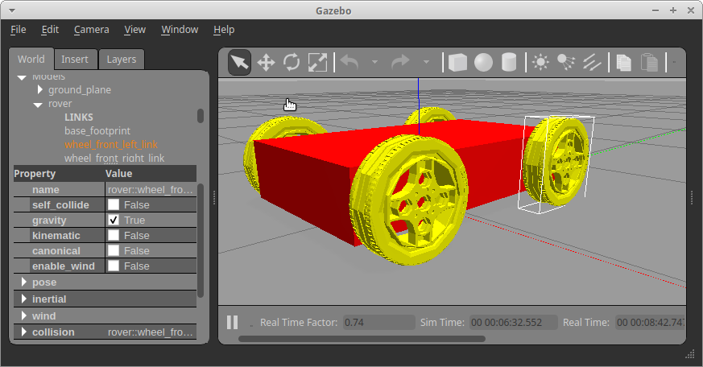

echo $GAZEBO_MODEL_PATHexport GAZEBO_MODEL_PATH=~/catkin_ws/src/mobile_robot/models:$GAZEBO_MODEL_PATH
ROS version Noetic

mkdir -p ~/test_ws/src
cd ~/test_ws/src
catkin_init_workspace
cd ~/test_ws
catkin_make
source devel/setup.bash
roscd - check ws
cd ~/test_ws/src
catkin_create_pkg mobile_robot std_msgs rospy urdf xacro rviz gazebo tf2 geometry_msgs joint_state_publisher_gui
cd ~/test_ws
catkin_make –only-pkg-with-deps mobile_robot
source devel/setup.bush
roscd mobile_robot
mkdir urdf
roscd mobile_robot
touch rover.urdf
cd ~/test_ws
code.
cd ~/catkin_ws/src/mobile_robot
mkdir launch
cd launch
touch rviz.launch
touch gazebo.launch
roslaunch mobile_robot rviz.launch
roslaunch mobile_robot gazebo.launch echo $GAZEBO_MODEL_PATHexport GAZEBO_MODEL_PATH=~/catkin_ws/src/mobile_robot/models:$GAZEBO_MODEL_PATH